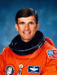

Lyndon B. Johnson Space Center
Houston, Texas 77058
|
National Aeronautics and Space Administration Lyndon B. Johnson Space Center Houston, Texas 77058 |
 |
Biographical Data |
||
Ronald M. Sega (Ph.D.)
NASA Astronaut (former)
PERSONAL DATA: Born December 4, 1952, in Cleveland, Ohio.
EDUCATION: Graduated from Nordonia High School, Macedonia, Ohio, in 1970; received a bachelor of science degree in Mathematics and Physics from the U.S. Air Force Academy in 1974, a master of science degree in Physics from Ohio State in 1975, and a doctorate in Electrical Engineering from University of Colorado in 1982.
ORGANIZATIONS: American Institute of Aeronautics and Astronautics (AIAA) - Associate Fellow (1992), Institute of Electrical and Electronics Engineers (IEEE), American Physical Society (APS), Institute for the Advancement of Engineering - Fellow (1992), Society for Photo-Optical Instrumentation Engineers (SPIE), Air Force Reserve Officer Association, Association of Space Explorers, and Eta Kappa Nu.
SPECIAL HONORS: Distinguished Graduate of the U.S. Air Force Academy, 1974. Top Graduate of the Pilot Instructor Training Course, 1976. Officer of the Year in the Department of Physics, U.S. Air Force Academy, 1980. Recipient of Air Force Meritorious Service Medal, Commendation Medal, and Reserve Achievement Medal. Air Force Research Fellow - Air Force Office of Scientific Research, 1985. Received the Outstanding Faculty Award - Department of Electrical Engineering at the University of Colorado, 1985. Selected to the Academic Hall of Fame of his high school in Macedonia, Ohio, 1988. Reserve Officer of the Year (IMA), Air Force Space Command, 1988; Reserve Officer of the Year (IMA), U.S Air Force, 1988. Received an honorary doctorate from Clarkson University, 1993. Recipient of the NASA Space Flight Medal, 1994 and 1996. Superior Achievement Award (NASA Director of Operations, Russia), 1995, and the NASA Outstanding Leadership Medal, 1997.
EXPERIENCE: Dr. Sega graduated from the U.S. Air Force Academy in 1974, and was commissioned a Second Lieutenant in the U.S. Air Force. He earned a masters degree in Physics at Ohio State University in 1975. Completing pilot training in 1976 he served as an Instructor Pilot at Williams AFB, Arizona, until 1979. From 1979 to 1982 he was on the faculty of the U.S. Air Force Academy in the Department of Physics where he designed and constructed a laboratory facility to investigate microwave fields using infrared techniques while pursuing a doctorate in Electrical Engineering. In 1982 he joined the faculty of the University of Colorado at Colorado Springs as Assistant Professor in the Department of Electrical and Computer Engineering. He was promoted to Associate Professor in 1985, granted tenure in 1988, promoted to Professor in 1990, and is currently on an extended leave of absence. From 1987 to 1988 he served as Technical Director, Lasers and Aerospace Mechanics Directorate, of the Frank J. Seiler Research Laboratory at the U.S. Air Force Academy. From 1989 to 1990, while on leave from the University of Colorado, he served as Research Associate Professor of Physics at the University of Houston, affiliated with the Space Vacuum Epitaxy Center, and currently is Adjunct Professor of Physics. Dr. Sega is a Co-Principal Investigator of the Wake Shield Facility (WSF)which has flown on Space Shuttle mission STS-60 in February 1994 and STS-69 in 1995, also serving as mission director for WSF. He has authored or co-authored over 100 technical publications.
An Air Force Reserve Officer, he holds an aeronautical rating of Command Pilot and the rank of Colonel. He serves as a reserve augmentee to the Director, Plans, Air Force Space Command.
As a pilot, Dr. Sega has logged over 4,000 hours in the Air Force, Air Force Reserves, and NASA.
Selected by NASA in January 1990, Dr. Sega became an astronaut in July 1991, qualified for assignment as a mission specialist on Space Shuttle flight crews. His technical assignments have included: working Remote Manipulator System (RMS) issues for the Astronaut Office Mission Development Branch; supporting Orbiter software verification in the Shuttle Avionics Integration Laboratory (SAIL); Chief of Astronaut Appearances; Science Support Group Lead; Space Station integration team; Astronaut Representative to the Space Station Science and Utilization Advisory Board (primarily an external board for NASA).
From November 1994 to March 1995, Dr. Sega was the NASA Director of Operations, Star City, Russia (The Gagarin Cosmonaut Training Center) responsible for managing NASA activities at Star City. These activities involved building an organization and infrastructure to support Astronaut and Cosmonaut mission and science training for flight on the Russian Space Station Mir. He also participated in training on Russian Space Systems and was the first American to train in the Russian EVA suit (Orlan) in their underwater facility (Hydrolaboratory). A veteran of two space flights (STS-60 in 1994 and STS-76 in 1996), Dr. Sega has logged over 420 hours in space.
Dr. Sega left NASA on July 1, 1996 to become Dean of the College of Engineering and Applied Science, University of Colorado at Colorado Springs.
SPACE FLIGHT EXPERIENCE: STS-60 was the first joint U.S./Russian Space Shuttle Mission. Launched on February 3, 1994, STS-60 was the second flight of the Space Habitation Module-2 (Spacehab-2), and the first flight of the Wake Shield Facility (WSF-1). During the 8-day flight, the crew of Discovery conducted a wide variety of biological materials science, earth observation, and life science experiments. He was the "flight engineer" for ascent and entry on this mission, performed several experiments on orbit, and operated the robotic arm, berthing the Wake Shield onto its payload bay carrier on four separate occasions. Following 130 orbits of the Earth in 3,439,705 miles, STS-60 landed at Kennedy Space Center, Florida, on February 11, 1994. With the completion of his first space flight, Dr. Sega logged 8 days, 7 hours, 9 minutes in space.
STS-76, the third docking mission to the Russian space station Mir, launched on March 22, 1996 with a crew of six aboard Atlantis. Following rendezvous and docking with Mir, a NASA Astronaut transferred to Mir for a five month stay to begin a continuous presence of U.S. astronauts aboard Mir for the next two year period. Dr. Sega was the Payload Commander for this mission and lead on Biorack, a small multipurpose laboratory located in the Spacehab module carried in the Shuttle payload bay. Biorack was used to technology development, fundamental biology (research into plant and animal cellular function), and environment characterization. He was responsible for planning and on-orbit operations, including extensive transfer of logistics and science, including 4800 pounds of science and mission hardware, food, water and air to Mir, and returning over 1100 pounds of U.S. and ESA science and Russian hardware. Following 144 orbits of the Earth, Atlantis landed with a crew of five at Edwards Air Force Base in California on March 31, 1996. Mission duration was 9 days, 5 hours, 15 minutes.
MAY 1999
This is the only version available from NASA. Updates must be sought direct from the above named individual.
{kind=link}